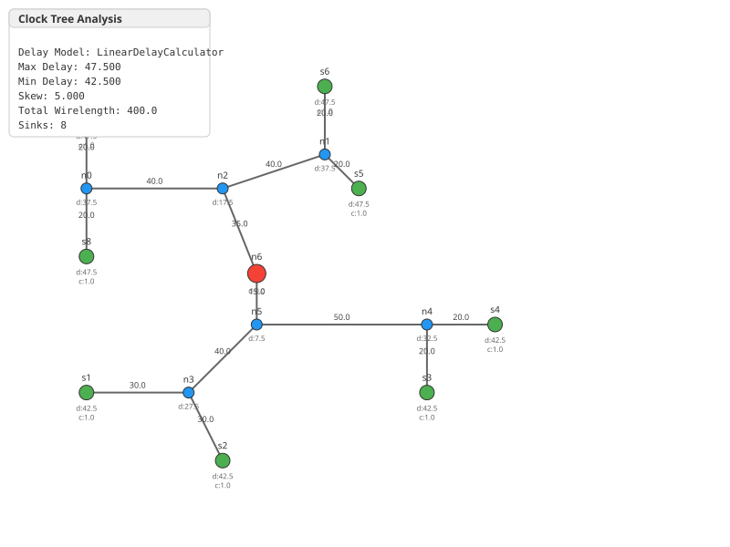
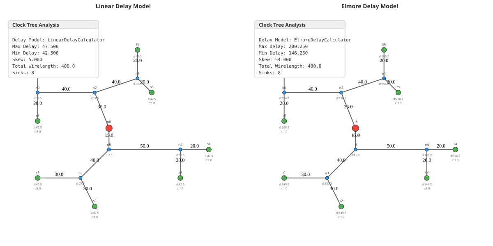

Thank you! 🎉
physdes-py - VLSI Physical Design Python Library

2026
Clock Tree Synthesis creates a distribution network that delivers the clock signal to all sequential elements (flip-flops, registers) with minimum skew.
graph TD
A[Clock Source] --> B[Clock Tree]
B --> C[FF1]
B --> D[FF2]
B --> E[FF3]
B --> F[FFn]
style A fill:#ff9800
style B fill:#2196f3
style C fill:#4caf50
style D fill:#4caf50
style E fill:#4caf50
style F fill:#4caf50The DME algorithm consists of two phases:
flowchart LR
A[Phase 1:<br/>Bottom-Up] --> B[Phase 2:<br/>Top-Down]
B --> C[prescribed-skew (not necessarily zero)<br/>Clock Tree]
style A fill:#ff9800
style B fill:#2196f3
style C fill:#4caf50.. svgbob::
:align: center
. v
.
.
.
. L ______ R
. .
. .
._____________
Merging Segment: The set of all possible positions where a parent node can be placed while maintaining prescribed-skew (not necessarily zero) between its children.
@dataclass
class Sink:
name: str
position: Point
capacitance: float = 1.0@dataclass
class TreeNode:
name: str
position: Point
left: Optional[TreeNode] = None
right: Optional[TreeNode] = None
parent: Optional[TreeNode] = None
wire_length: int = 0
delay: float = 0.0
capacitance: float = 0.0
need_elongation = False| Type | Description |
|---|---|
| Leaf | Clock sink (flip-flop) |
| Internal | Merging point |
| Root | Clock source connection |
class DelayCalculator(ABC):
@abstractmethod
def calculate_wire_delay(self, length: int, load_capacitance: float) -> float:
pass
@abstractmethod
def calculate_wire_delay_per_unit(self, load_capacitance: float) -> float:
pass
@abstractmethod
def calculate_wire_capacitance(self, length: int) -> float:
pass
@abstractmethod
def calculate_tapping_point(self, node_left, node_right, distance) -> Tuple[int, float]:
passdelay = k × length
Where k is the delay per unit length.
class LinearDelayCalculator(DelayCalculator):
def __init__(self, delay_per_unit: float = 1.0,
capacitance_per_unit: float = 1.0):
self.delay_per_unit = delay_per_unit
self.capacitance_per_unit = capacitance_per_unit
def calculate_wire_delay(self, length: int, load_capacitance: float) -> float:
return self.delay_per_unit * lengthdef calculate_tapping_point(self, node_left, node_right, distance):
skew = node_right.delay - node_left.delay
extend_left = round((skew / self.delay_per_unit + distance) / 2)
delay_left = node_left.delay + extend_left * self.delay_per_unit
return extend_left, delay_left$$delay = R \times \left( \frac{C_{wire}}{2} + C_{load} \right)$$
Where: - R = wire
resistance - Cwire
= wire capacitance
- Cload
= load capacitance
class ElmoreDelayCalculator(DelayCalculator):
def __init__(self, unit_resistance: float = 1.0,
unit_capacitance: float = 1.0):
self.unit_resistance = unit_resistance
self.unit_capacitance = unit_capacitance
def calculate_wire_delay(self, length: int, load_capacitance: float) -> float:
wire_resistance = self.unit_resistance * length
wire_capacitance = self.unit_capacitance * length
return wire_resistance * (wire_capacitance / 2 + load_capacitance)| Model | Complexity | Accuracy |
|---|---|---|
| Linear | O(1) | Basic |
| Elmore | O(1) | Realistic RC |
def build_clock_tree(self) -> TreeNode:
# Step 1: Create leaf nodes from sinks
nodes = [TreeNode(name=s.name, position=s.position,
capacitance=s.capacitance) for s in self.sinks]
# Step 2: Build merging tree (balanced bipartition)
merging_tree = self._build_merging_tree(nodes, False)
# Step 3: Compute merging segments (bottom-up)
merging_segments = self._compute_merging_segments(merging_tree)
# Step 4: Embed tree (top-down)
clock_tree = self._embed_tree(merging_tree, merging_segments)
# Step 5: Compute delays and wire lengths
self._compute_tree_parameters(clock_tree)
return clock_treedef _build_merging_tree(self, nodes: List[TreeNode], vertical: bool) -> TreeNode:
if len(nodes) == 1:
return nodes[0]
# Sort along alternating axes (x, y, x, y...)
if vertical:
sorted_nodes = sorted(nodes, key=lambda n: n.position.xcoord)
else:
sorted_nodes = sorted(nodes, key=lambda n: n.position.ycoord)
# Split into two balanced groups
mid = len(sorted_nodes) // 2
left_group = sorted_nodes[:mid]
right_group = sorted_nodes[mid:]
# Recursively build subtrees
left_child = self._build_merging_tree(left_group, not vertical)
right_child = self._build_merging_tree(right_group, not vertical)
# Create parent node
parent = TreeNode(name=f"n{self.node_id}",
position=left_child.position,
left=left_child, right=right_child)
return parentdef _compute_merging_segments(self, root: TreeNode) -> Dict[str, Any]:
merging_segments = {}
def compute_segment(node: TreeNode):
if node.left is None and node.right is None:
# Leaf: merging segment = point
manhattan_segment = self.MA_TYPE.from_point(node.position)
merging_segments[node.name] = manhattan_segment
return manhattan_segment
# Recursively compute children segments
left_ms = compute_segment(node.left)
right_ms = compute_segment(node.right)
# Calculate distance between segments
distance = left_ms.min_dist_with(right_ms)
# Calculate tapping point for prescribed-skew (not necessarily zero)
extend_left, delay_left = self.delay_calculator.calculate_tapping_point(
node.left, node.right, distance)
node.delay = delay_left
# Merge segments
merged_segment = left_ms.merge_with(right_ms, extend_left)
merging_segments[node.name] = merged_segment
# Update capacitance
wire_cap = self.delay_calculator.calculate_wire_capacitance(distance)
node.capacitance = node.left.capacitance + node.right.capacitance + wire_cap
return merged_segment
compute_segment(root)
return merging_segmentsdef _embed_tree(self, merging_tree, merging_segments):
def embed_node(node, parent_segment=None):
if node is None:
return
if parent_segment is None:
# Root: choose position nearest to source
node_segment = merging_segments[node.name]
if self.source is None:
node.position = node_segment.get_upper_corner()
else:
node.position = node_segment.nearest_point_to(self.source)
else:
# Internal: choose position nearest to parent
node_segment = merging_segments[node.name]
node.position = node_segment.nearest_point_to(node.parent.position)
node.wire_length = node.position.min_dist_with(node.parent.position)
# Recursively embed children
embed_node(node.left, merging_segments[node.name])
embed_node(node.right, merging_segments[node.name])
embed_node(merging_tree)
return merging_treedef _compute_tree_parameters(self, root: TreeNode) -> None:
def compute_delays(node, parent_delay=0.0):
if node is None:
return
if node.parent:
# Calculate wire delay from parent
wire_delay = self.delay_calculator.calculate_wire_delay(
node.wire_length, node.capacitance)
node.delay = parent_delay + wire_delay
else:
node.delay = 0.0 # Root has zero delay
# Recursively compute for children
compute_delays(node.left, node.delay)
compute_delays(node.right, node.delay)
compute_delays(root)sinks = [
Sink("s1", Point(10, 20), 1.0),
Sink("s2", Point(30, 40), 1.0),
Sink("s3", Point(50, 10), 1.0),
Sink("s4", Point(70, 30), 1.0),
Sink("s5", Point(90, 50), 1.0),
]| Metric | Linear | Elmore |
|---|---|---|
| Skew | 0.0 | 0.0 |
| Max Delay | ~45.0 | ~120.0 |
| Wirelength | Same | Same |
Dlinear = k ⋅ L
$$D_{Elmore} = R \cdot L \cdot \left(\frac{C \cdot L}{2} + C_{load}\right)$$
Or expanded:
$$D_{Elmore} = R \cdot C \cdot \frac{L^2}{2} + R \cdot C_{load} \cdot L$$
When the tapping point calculation yields a position outside the valid range, we need to elongate one branch to maintain prescribed-skew (not necessarily zero).
flowchart TD
A[Calculate tapping point] --> B{extend_left < 0?}
B -->|Yes| C[Right branch too short<br/>Set extend_left = 0]
B -->|No| D{extend_left > distance?}
D -->|Yes| E[Left branch too short<br/>Set extend_left = distance]
D -->|No| F[Normal case<br/>Use calculated value]
C --> G[Mark node.need_elongation = True]
E --> G
F --> H[Assign wire lengths normally]
style A fill:#ff9800
style G fill:#f44336
style H fill:#4caf50def _handle_boundary_conditions(
self,
extend_left: int,
distance: int,
node_left: TreeNode,
node_right: TreeNode,
delay_left: float,
) -> Tuple[int, float]:
if extend_left < 0:
# Left branch cannot reach - extend right
node_left.wire_length = 0
node_right.wire_length = distance
extend_left = 0
delay_left = node_left.delay
node_right.need_elongation = True # ⚠️ Flag for later处理
elif extend_left > distance:
# Right branch cannot reach - extend left
node_right.wire_length = 0
node_left.wire_length = distance
extend_left = distance
delay_left = node_right.delay
node_left.need_elongation = True # ⚠️ Flag for later处理
else:
# Normal case
node_left.wire_length = extend_left
node_right.wire_length = distance - extend_left
return extend_left, delay_left| Scenario | Cause | Solution |
|---|---|---|
extend_left < 0 |
Left delay >> Right delay | Extend right wire to balance |
extend_left > distance |
Right delay >> Left delay | Extend left wire to balance |
.. svgbob::
:align: center
Before Elongation: After Elongation:
L ---- v ---- R L ---- v ---- R
| |
+----Elongation----+ +----Elongation----+
The dotted line shows the extra wire added to balance delays.need_elongation
FlagTrue when boundary condition triggers# After tree building, check for elongation
def check_elongation(node):
if node.need_elongation:
print(f"Warning: {node.name} requires elongation")
if node.left:
check_elongation(node.left)
if node.right:
check_elongation(node.right)

Shows Elmore vs Linear delay distribution across the tree
from physdes.cts.dme_algorithm import Sink, DMEAlgorithm
from physdes.point import Point
# Define sinks (flip-flops)
sinks = [
Sink("FF1", Point(0, 0), 1.0),
Sink("FF2", Point(10, 0), 1.0),
Sink("FF3", Point(5, 10), 1.0),
]# Using Linear delay model
linear_calc = LinearDelayCalculator(delay_per_unit=0.5)
dme_linear = DMEAlgorithm(sinks, delay_calculator=linear_calc)
clock_tree = dme_linear.build_clock_tree()
# Analyze results
analysis = dme_linear.analyze_skew(clock_tree)
print(f"Skew: {analysis['skew']}") # Should be ~0
print(f"Wirelength: {analysis['total_wirelength']}")# Using Elmore delay model
elmore_calc = ElmoreDelayCalculator(
unit_resistance=0.1,
unit_capacitance=0.2
)
dme_elmore = DMEAlgorithm(sinks, delay_calculator=elmore_calc)
clock_tree = dme_elmore.build_clock_tree()
# Analyze results
analysis = dme_elmore.analyze_skew(clock_tree)
print(f"Skew: {analysis['skew']}") # Should be ~0
print(f"Max delay: {analysis['max_delay']:.3f}")# Specify clock source location
source = Point(5, 5)
dme = DMEAlgorithm(
sinks,
delay_calculator=LinearDelayCalculator(),
source=source
)
clock_tree = dme.build_clock_tree()
# Root will be placed nearest to source
print(f"Root position: {clock_tree.position}")| Operation | Time Complexity |
|---|---|
| Build merging tree | O(nlog n) |
| Compute segments | O(n) |
| Embed tree | O(n) |
| Compute delays | O(n) |
| Total | O(nlog n) |
Where n = number of sinks
def analyze_skew(self, root: TreeNode) -> Dict[str, Any]:
sink_delays = []
# Collect all sink delays
def collect_sink_delays(node):
if node is None:
return
if node.left is None and node.right is None:
sink_delays.append(node.delay)
collect_sink_delays(node.left)
collect_sink_delays(node.right)
collect_sink_delays(root)
max_delay = max(sink_delays)
min_delay = min(sink_delays)
skew = max_delay - min_delay
return {
"max_delay": max_delay,
"min_delay": min_delay,
"skew": skew,
"sink_delays": sink_delays,
"total_wirelength": self._total_wirelength(root),
}graph LR
DME[DMEAlgorithm] -->|uses| DC[DelayCalculator]
DC -->|implements| Linear[LinearDelayCalculator]
DC -->|implements| Elmore[ElmoreDelayCalculator]
style DME fill:#ff9800
style DC fill:#2196f3
style Linear fill:#4caf50
style Elmore fill:#4caf50build_clock_tree() defines the skeletonThe algorithm handles special cases in
_handle_boundary_conditions():
if extend_left < 0:
# Left branch too short - extend right
node_left.wire_length = 0
node_right.wire_length = distance
node_right.need_elongation = True
elif extend_left > distance:
# Right branch too short - extend left
node_right.wire_length = 0
node_left.wire_length = distance
node_left.need_elongation = True
else:
# Normal case
node_left.wire_length = extend_left
node_right.wire_length = distance - extend_left# All tests
pytest tests/test_dme_algorithm.py -v
# Specific test
pytest tests/test_dme_algorithm.py::test_zero_skew -v
# With coverage
pytest --cov physdes.cts.dme_algorithm --cov-report term-missing| Feature | Tests |
|---|---|
| Zero skew verification | ✅ |
| Linear vs Elmore | ✅ |
| Boundary conditions (Elongation) | ✅ |
| Wirelength calculation | ✅ |
Used for merging segment representation:
class ManhattanArc:
"""Rectilinear path representation"""
@staticmethod
def from_point(point: Point) -> ManhattanArc:
"""Create arc from a single point"""
def min_dist_with(self, other: ManhattanArc) -> int:
"""Calculate Manhattan distance between arcs"""
def merge_with(self, other: ManhattanArc, extend_left: int) -> ManhattanArc:
"""Merge two arcs to form parent segment"""
def nearest_point_to(self, point: Point) -> Point:
"""Find closest point on arc to given point"""physdes-py/
├── src/physdes/
│ ├── cts/
│ │ └── dme_algorithm.py # Main DME implementation ⭐
│ ├── manhattan_arc.py # Merging segments
│ ├── point.py # Point/Interval classes
│ └── router/
│ └── global_router.py # Related routing algorithms
├── tests/
│ └── test_dme_algorithm.py # DME tests
├── outputs/
│ ├── *clock_tree*.svg # Visualization outputs
│ └── delay_model_comparison.svg
└── README.md| Feature | Description | Difficulty |
|---|---|---|
| Buffer insertion | Add repeaters for long wires | ⭐⭐⭐ |
| Useful skew | Allow small skew for optimization | ⭐⭐ |
| Power-aware | Minimize power consumption | ⭐⭐⭐ |
| Variation-aware | Handle process variations | ⭐⭐⭐ |
| Multi-clock | Support multiple clock domains | ⭐⭐⭐ |
d((x1, y1), (x2, y2)) = |x1 − x2|+|y1 − y2|
Cwire = Cunit × L
Ctotal = Cleft + Cright + Cwire
classDiagram
class DelayCalculator {
<<abstract>>
+calculate_wire_delay(length, load_cap)
+calculate_wire_delay_per_unit(load_cap)
+calculate_wire_capacitance(length)
+calculate_tapping_point(node_left, node_right, distance)
}
class LinearDelayCalculator {
+delay_per_unit: float
+capacitance_per_unit: float
}
class ElmoreDelayCalculator {
+unit_resistance: float
+unit_capacitance: float
}
DelayCalculator <|-- LinearDelayCalculator
DelayCalculator <|-- ElmoreDelayCalculator| Method | Description |
|---|---|
build_clock_tree() |
Main entry point |
analyze_skew(root) |
Return skew analysis |
_build_merging_tree() |
Create binary tree |
_compute_merging_segments() |
Bottom-up MS computation |
_embed_tree() |
Top-down positioning |
_compute_tree_parameters() |
Delay calculation |
| Method | Description |
|---|---|
calculate_wire_delay() |
Wire delay for segment |
calculate_wire_delay_per_unit() |
Delay per unit length |
calculate_wire_capacitance() |
Wire capacitance |
calculate_tapping_point() |
prescribed-skew (not necessarily zero) balance point |
physdes-py - VLSI Physical Design Python Library